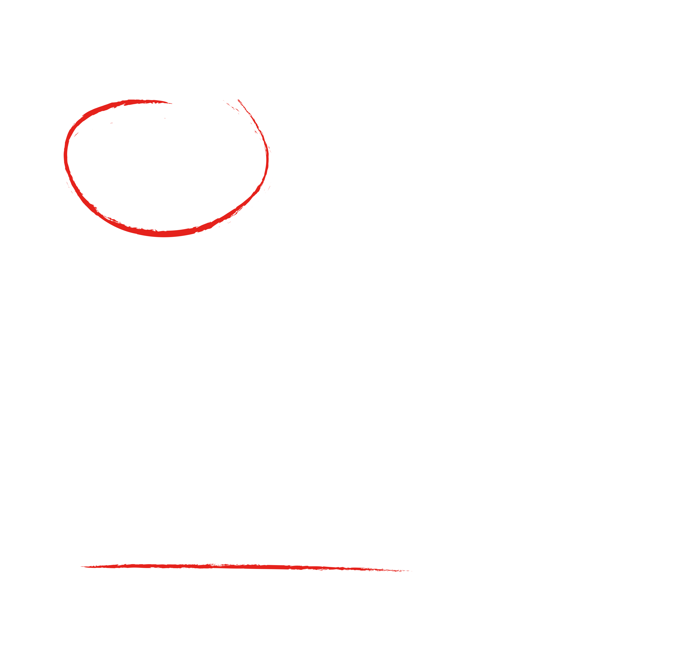
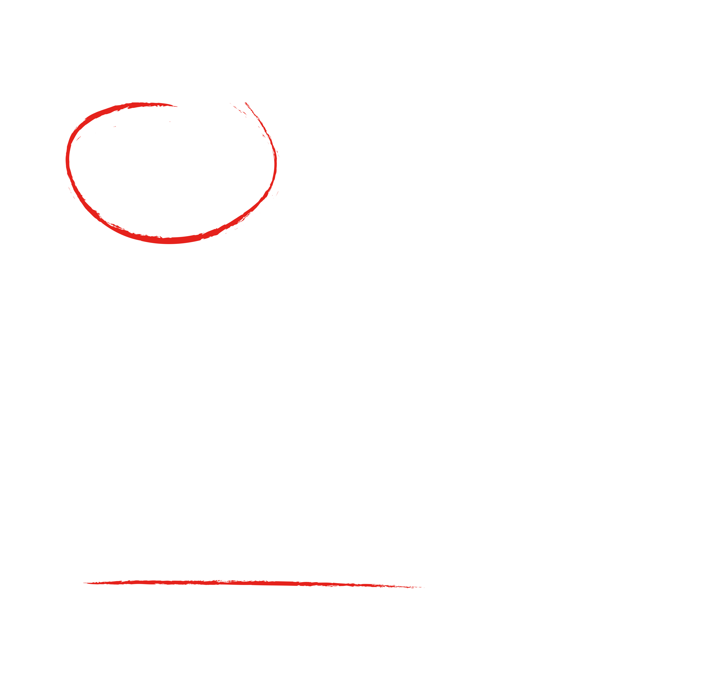
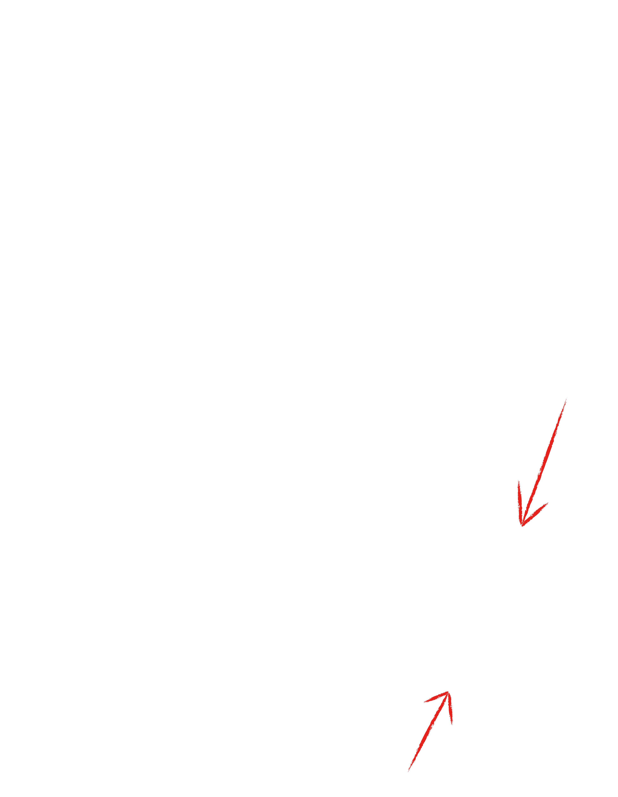
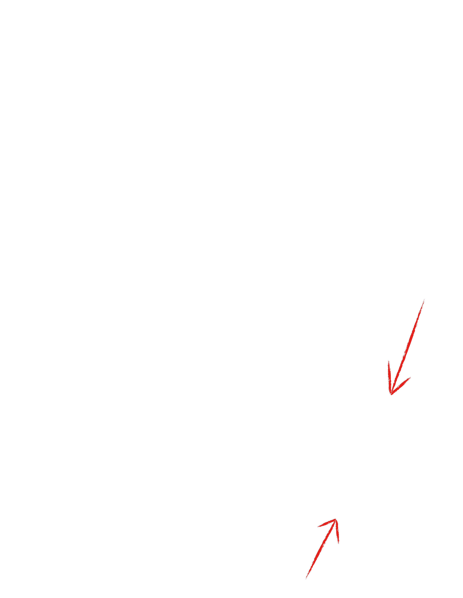

Von Fashion
Von Fashion is a clothing brand offering a diverse range of apparel. As a relatively new company, it needed a more defined identity that aligns with its target market.

Von Fashion is a clothing brand offering a diverse range of apparel. As a relatively new company, it needed a more defined identity that aligns with its target market.
The client's request was for the logo to be sleek and entirely in uppercase. The brandname is VON and was to be presented according to the following options: either just VON, VON - For all, or VON Fashion - For all. The logo should be suitable for social media as well as for the website, and the colors were to be neutral. Several sketches were made based on the aforementioned criteria, two of which were selected by the client for further development.
 

 

Von Fashion is a clothing brand offering a diverse range of apparel. As a relatively new company, it needed a more defined identity that aligns with its target market.
Based on the selected logo, additional sketches were made to suit larger screens. One was eventually chosen to represent the website.

#000000
#EAE7E3